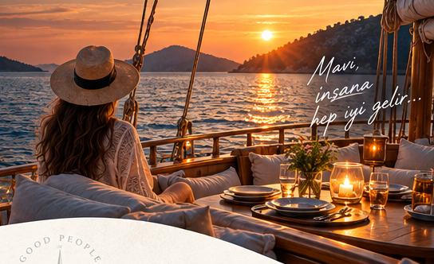
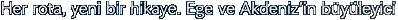
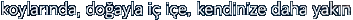
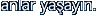
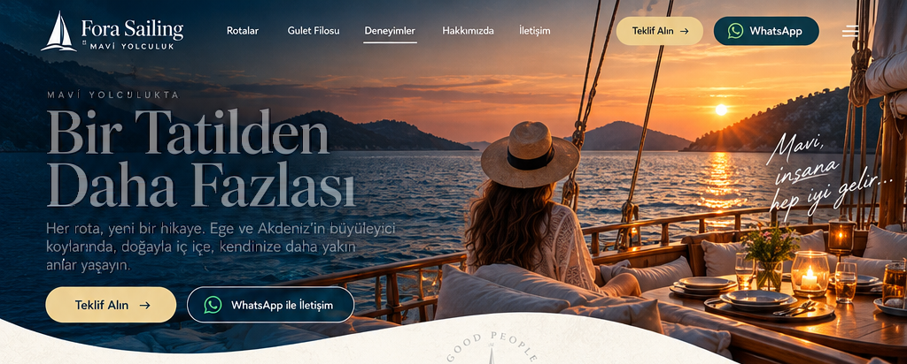
Bir Tatilden Daha Fazlası
Her rota, yeni bir hikâye. Ege ve Akdeniz’in büyüleyici koylarında, doğayla iç içe, kendinize daha yakın anlar yaşayın.
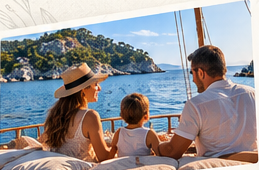
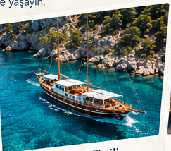
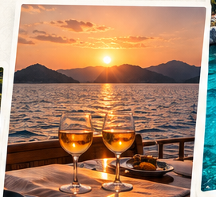
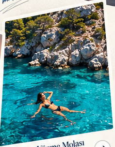
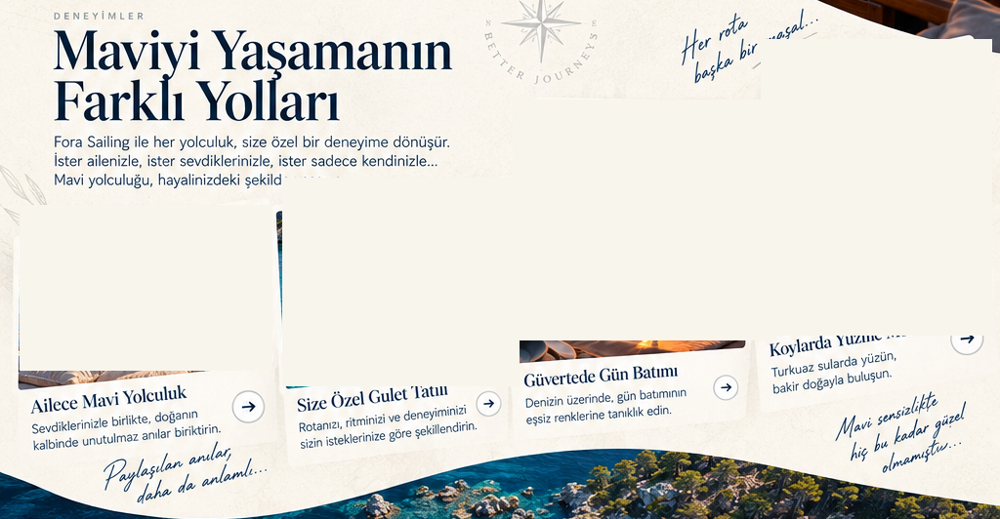
Maviyi Yaşamanın Farklı Yolları
Fora Sailing ile her yolculuk, size özel bir deneyime dönüşür. Mavi yolculuğu, hayalinizdeki şekilde yaşayın.
- Ailece Mavi Yolculuk
- Size Özel Gulet Tatili
- Güvertede Gün Batımı
- Koylarda Yüzme Molası
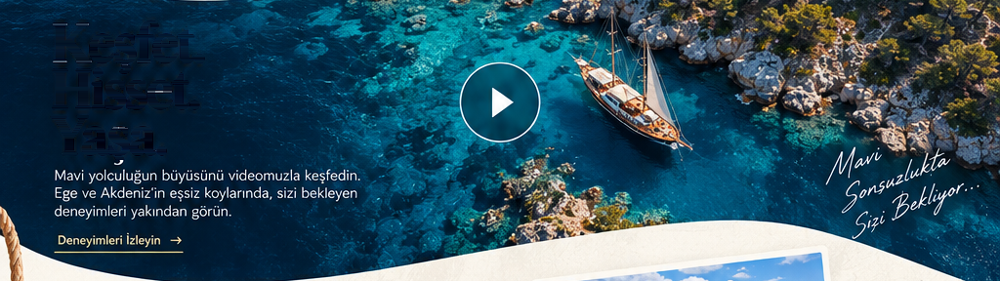
Keşfet. Hisset. Yaşa.
Mavi yolculuğun büyüsünü keşfedin. Deneyiminizi planlayın.
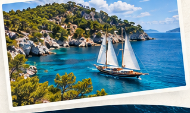
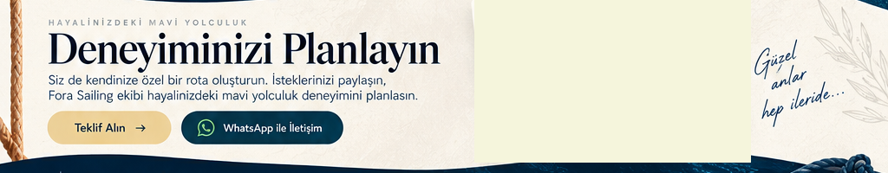
Deneyiminizi Planlayın
Size özel bir rota oluşturun. İsteklerinizi paylaşın, ekibimiz mavi yolculuğunuzu planlasın.